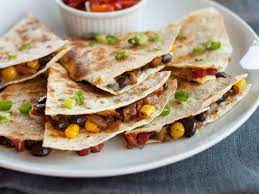

Quesadillas

Description
You don't really need a recipe to make this insanely popular Mexican dish.
Top a tortilla with cheese (and whatever else you've got), then fold it in half and cook until the tortilla is crispy and the cheese is melty.
But if you're looking for some guidance, especially in cooking up some quick and easy chicken to stuff inside, this recipe won't let you down.
Ingredients
- 1 tbsp. extra-virgin olive oil
- 2 bell peppers, thinly sliced
- 1/2 onion, thinly sliced
- Kosher salt
- Freshly ground black pepper
- 1 lb. boneless skinless chicken breasts, sliced into strips
- 1/2 tsp. chili powder
- 1/2 tsp. ground cumin
- 1/2 tsp. dried oregano
- 4 medium flour tortillas
- 2 cups shredded Monterey jack
- 2 cups shredded cheddar
- 1 avocado, sliced
1 tbsp. vegetable oil
- 2 green onions, thinly sliced
- Sour cream, for serving
Steps
- In a large skillet over medium-high heat, heat olive oil. Add peppers and onion and season with salt and pepper. Cook until soft, 5 minutes. Transfer to a plate.
- Heat remaining tablespoon vegetable oil over medium-high heat. Season chicken with spices, salt, and pepper and cook, stirring occasionally, until golden and
cooked through, 8 minutes. Transfer to a plate.
- Add 1 flour tortilla to skillet and top half of the tortilla with a heavy sprinkling of both cheeses, cooked chicken mixture, pepper-onion mixture, a few slices of avocado, and green onions.
Fold the other half of the tortilla over and cook, flipping once, until golden, 3 minutes per side. Repeat to make 4 quesadillas.
- Slice into wedges and serve with sour cream.
Home